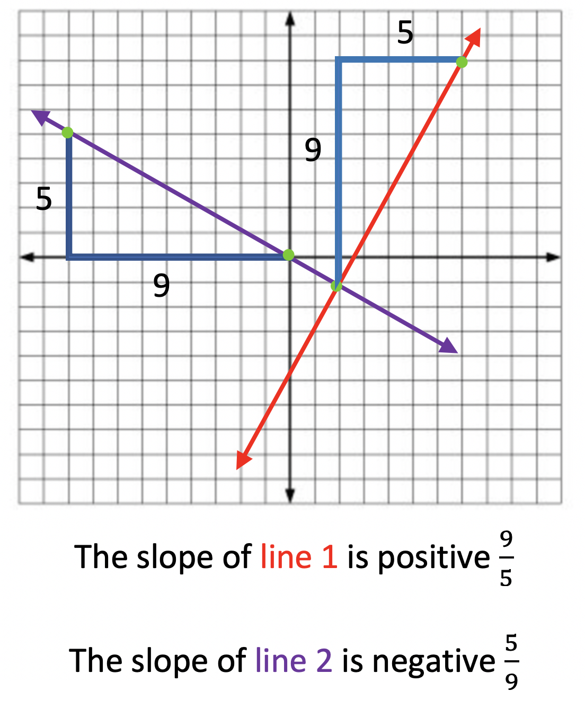

Two lines are called Perpendicular if they intersect to form four 90° angles.
When you place these two lines on a coordinate plane, what you find is that the slopes of each line are opposite reciprocals of eachother.
This will remain true for any two perpendicular lines on the coordinate plane. Their slopes will always be oppposite reciprocals of eachother.
Example: Given the slope of one of the lines, calculate the second line's slope:
Line 1: slope = 3/2
Line 2: slope = ?
The slope of line two is the opposite of line one. Therefore because line one's slope is positive, our other line must have a slope that is negative; like the purple line in the image below. The red line acts like our line 1 because its slope is positive, or uphill.
Example:

Example:
If two lines are perpendicular, their slopes are opposite reciprocals.
1. Opposites: one slope is positive uphill slope, the other line is downhill negative slope.
2. Reciprocals: Switch the denominator and numerator to create two fractions that are reciprocals.
There is a song you can sing to help you remember the rules of perpendicular lines:
Example:
What will the slope of a line be if it is perpendicular to the line with a slope of -4/3?
Enter your answer as a decimal value.
What will the slope of a line be if it is perpendicular to the line with a slope of 5/3?
Enter your answer as a decimal value.
What will the slope of a line be if it is perpendicular to the line with a slope of 10/5?
Enter your answer as a decimal value.
RULE:
"FLIP THE FRACTION AND CHANGE THE SIGN, THAT'S HOW YOU MAKE A PERPENDICULAR LINE!"